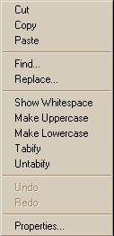
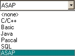

The Editor Window offers shortcut commands for keyboard strokes and left- and right-mouse clicks. These shortcuts are listed below, followed by sections on using the mouse to accomplish tasks in the Editor more efficiently, and right-click menu shortcuts.
To open a Help topic for a particular command used in the Editor window, select the command name and press the F1 key.
To run the current Editor line automatically in the Command Output window and step to the next line in the Editor, press the F8 key.
The complete set of default keys and the associated command that each keystroke maps to is listed in the following table.
| Command | Keystroke |
| BookmarkNext | F2 |
| BookmarkPrev | Shift + F2 |
| Bookmark On/Off | Control + F2 |
| CharLeft | Left |
| CharLeftExtend | Shift + Left |
| CharRight | Right |
| CharRightExtend | Shift + Right |
| Copy | Control + C |
| Copy | Control + Insert |
| Cut | Shift + Delete |
| Cut | Control + X |
| CutSelection | Control + Alt + W |
| Delete | Delete |
| DeleteBack | Backspace |
| DocumentEnd | Control + End |
| DocumentEndExtend | Control + Shift + End |
| DocumentStart | Control + Home |
| DocumentStartExtend | Control + Shift + Home |
| Find | Alt + F3 |
| Find | Control + F |
| FindNext | F3 |
| FindNextWord | Control + F3 |
| FindPrev | Shift + F3 |
| FindPrevWord | Control + Shift + F3 |
| FindReplace | Control + Alt + F3 |
| GoToLine | Control + G |
| GoToMatchBrace | Control + ] |
| Home | Home |
| HomeExtend | Shift + Home |
| IndentSelection | Tab |
| LineCut | Control + Y |
| LineDown | Down |
| LineDowNextend | Shift + Down |
| LineEnd | End |
| LineEndExtend | Shift + End |
| LineOpenAbove | Control + Shift + N |
| LineUp | Up |
| LineUpExtend | Shift + Up |
| LowercaseSelection | Control + U |
| PageDown | Next |
| PageDowNextend | Shift + Next |
| PageUp | PRIOR |
| PageUpExtend | Shift + Prior |
| Paste | Control + V |
| Paste | Shift + Insert |
| Properties | Alt + Enter |
| RecordMacro | Control + Shift + R |
| Redo | Control + A |
| RunLine | F8 |
| SelectLine | Control + Alt + F8 |
| SelectSwapAnchor | Control + Shift + X |
| SentenceCut | Control + Alt + K |
| SentenceLeft | Control + Alt + Left |
| SentenceRight | Control + Alt + Right |
| SetRepeatCount | Control + R |
| TabifySelection | Control + Shift + T |
| ToggleOvertype | Insert |
| ToggleWhitespaceDisplay | Control + Alt + T |
| Undo | Control + Z |
| Undo | Alt + Backspace |
| UnindentSelection | Shift + Tab |
| UntabifySelection | Control + Shift + Space |
| UppercaseSelection | Control + Shift + U |
| WindowScrollDown | Control + Up |
| WindowScrollLeft | Control + PageUp |
| WindowScrollRight | Control + PageDown |
| WindowScrollUp | Control + Down |
| WordDeleteToEnd | Control + Delete |
| WordDeleteToStart | Control + Backspace |
| WordLeft | Control + Left |
| WordLeftExtend | Control + Shift + Left |
| WordRight | Control + Right |
| WordRightExtend | Control + Shift + Right |
The Editor supports the following mouse actions:
| Mouse Action | Result |
| L-Button click over text | Changes the caret position |
| R-Button click | Displays the right-click menu |
| L-Button down over selection, and drag | Moves text |
| Ctrl + L-Button down over selection, and drag | Copies text |
| L-Button click over left margin | Selects line |
| L-Button click over left margin, and drag | Selects multiple lines |
| Alt + L-Button down, and drag | Select columns of text |
| L-Button double click over text | Select word under pointer |
| Spin IntelliMouse mouse wheel | Scroll the window vertically |
| Single click IntelliMouse mouse wheel | Select the word under the pointer |
| Double click IntelliMouse mouse wheel | Select the line under the pointer |
| Click and drag splitter bar | Split the window into multiple views or adjust the current splitter position |
| Double click splitter bar | Split the window in half into multiple views or unsplit the window if already split |
By placing your mouse cursor in the Editor window and right-clicking, you can access several commands shown below.

The Window Properties command on the right-click menu opens a dialog with the following tabs. The commands available in this dialog give you the flexibility to set colors and fonts, language and tabs, keyboard assignments, and many other options.
| Window Properties Dialog Tabs | Selections |
| Color/Font | Select foreground/background colors and font for bookmarks, comments, keywords, left margin, numbers, operators, scope keywords, strings, text, and window |
| Language/Tabs |
Select Editor language (ASAP is default)  |
| Keyboard | Reassign keyboard key assignments |
| Misc | Miscellaneous options |